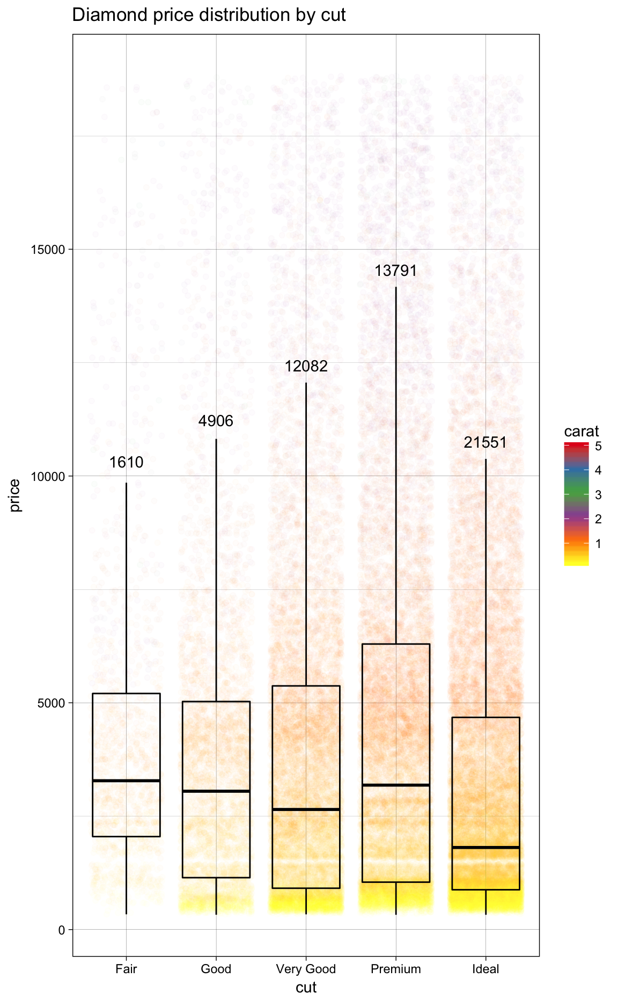
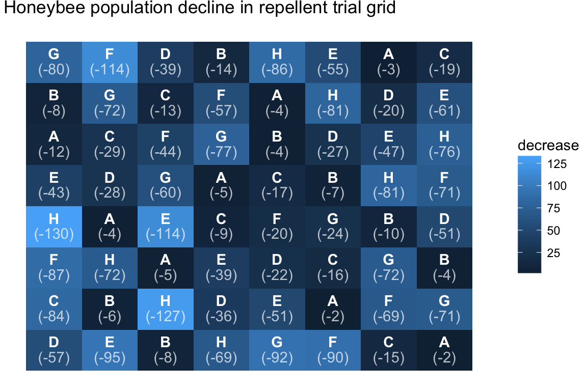

Overview
Take a look at the ggpackets project page!
Easily build components of ggplots without sacraficing the ease of ggplot’s layer parameters and construction syntax.
Installation
ggpackets is not yet available on CRAN. Until it is, you can install the most recent development version using the short script below:
if (!require(devtools, quietly = TRUE))
install.packages('devtools')
devtools::install_github('dgkf/ggpackets', build_vignettes = TRUE)Get Involved
There are plenty of ways to help contribute:
File issues!
Found a bug? Think the syntax looks ugly? Don’t like the name? Tell me! Issues are the best way to start the conversation.Write documentation!
More resources always helps. Found a function unintuitive? Example code and improved function descriptors would be helpful. If you use the package and would feel comfortable writing about a topic not yet covered in a vignette, feel free to contribute a new vignette for it.Write Unit Tests!
There’s some pretty sophisticated manipulations going on under the hood to make everything as clean as possible, because of that it’s important to make sure everything stays working the way we expect it to. Unit test contributions always welcome!Contribute Code
Last but not least, code contributors are welcome. Reach out and get in touch if you’re passionate about the goal of the project.
Quick Start
Define common ggplot layer sets together into a singled object. Connect all your plots with a single plot component definition and debug one central location. Build beautiful templates and save them once, reuse them easily and without having to abandon the ggplot construction framework.
ggpk_box_and_scatter <- ggpacket() +
geom_point(position = position_jitter(width = 0.4), alpha = 0.02) +
geom_boxplot(outlier.shape = NA, fill = NA, color = 'black') +
geom_text(stat = 'summary', vjust = -1, fun.data = function(d) c(
y = quantile(d, 0.75, names = F) + 1.5 * IQR(d),
label = length(d)
)) +
theme_linedraw() +
scale_color_distiller(palette = "Set1")Now we can use that template repeatedly with a much simpler ggplot call
ggplot(diamonds, aes(x = cut, y = price, color = carat)) +
ggpk_box_and_scatter +
ggtitle('Diamond price distribution by cut')
Handle custom arguments & parameter propegation
Use the ggpack() function to bundle ggplot layers and give them a name. The name will serve as a prefix for subsetting arguments passed to it. These propegated parameters can be overridden by including them as ellipses arguments.
ggpk_labelled_heatmap <- function(...) {
ggpack(geom_tile, id = 'tile', color = NA, ...) +
ggpack(geom_text, id = 'text1', color = 'white',
vjust = -0.3, fontface = 'bold', ...) +
ggpack(geom_text, id = 'text2', color = 'white',
vjust = 1.1, alpha = 0.7, ...) +
theme_void()
} We can specify an aesthetic for a subset of the layers using the layer id.
ggplot(as.data.frame(OrchardSprays)) +
aes(x = rowpos, y = colpos, label = treatment, fill = decrease) +
ggpk_labelled_heatmap(text2.label = sprintf("(-%i)", decrease)) +
ggtitle('Honeybee population decline in repellent trial grid')